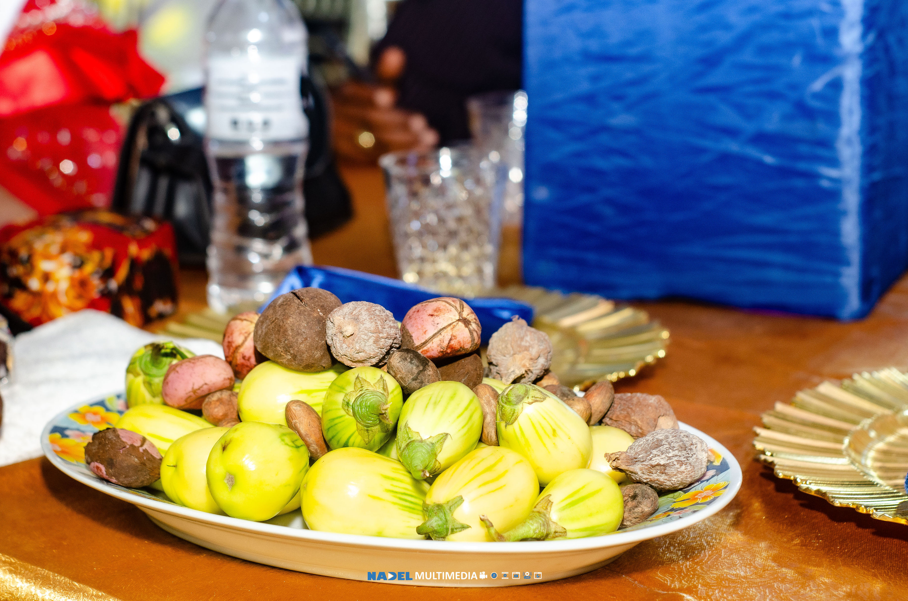
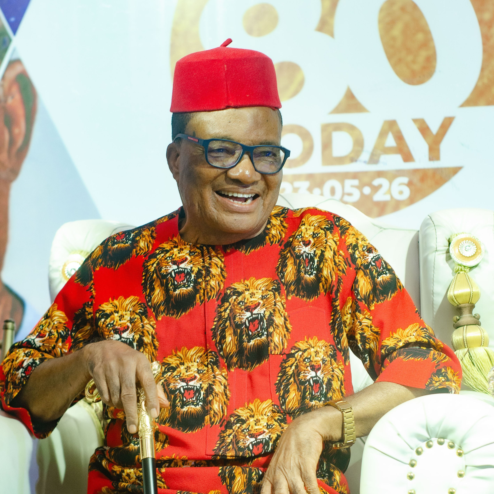
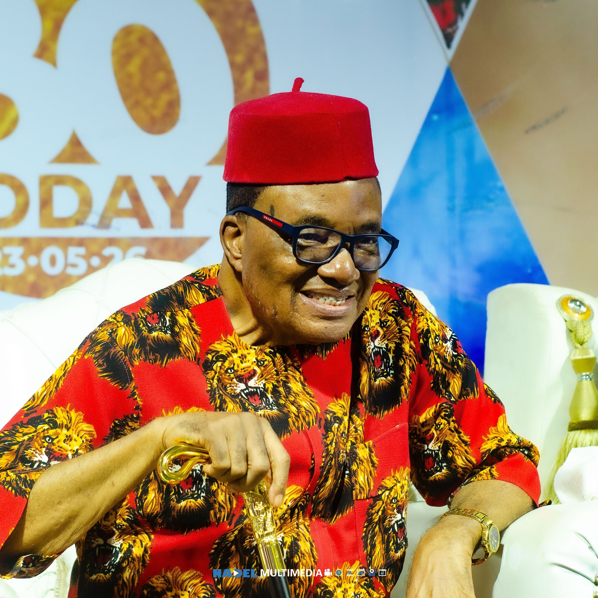
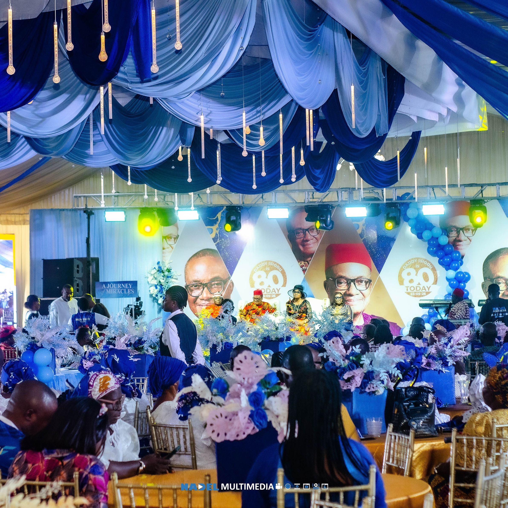
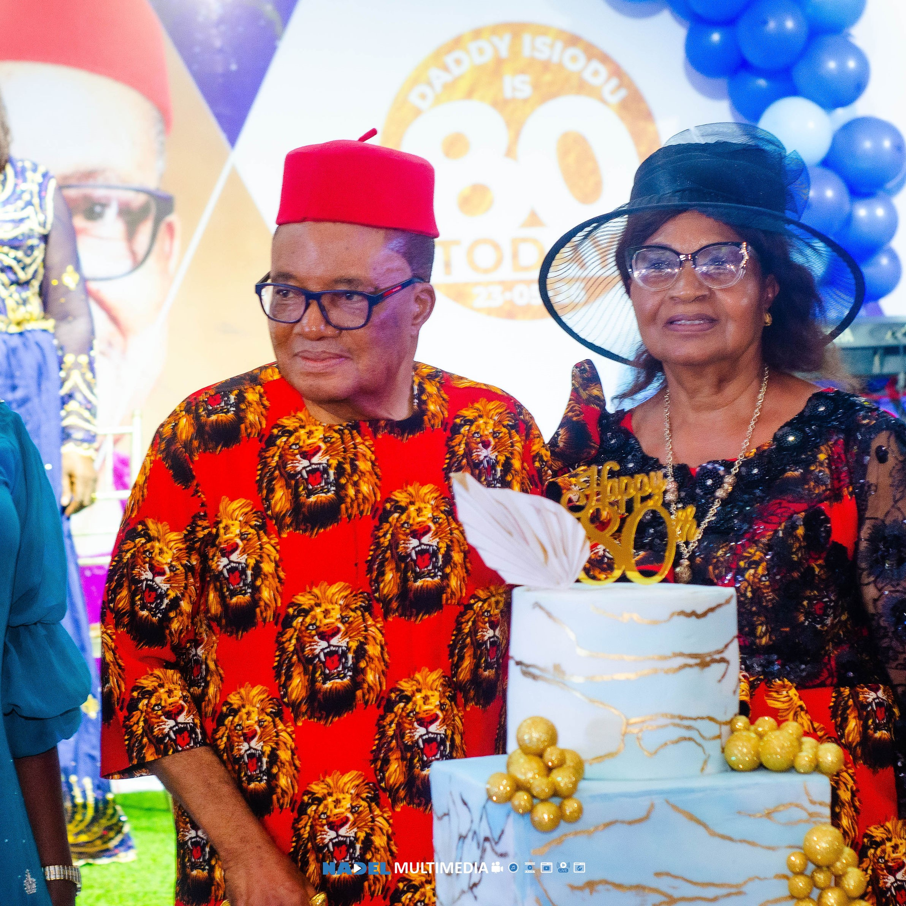
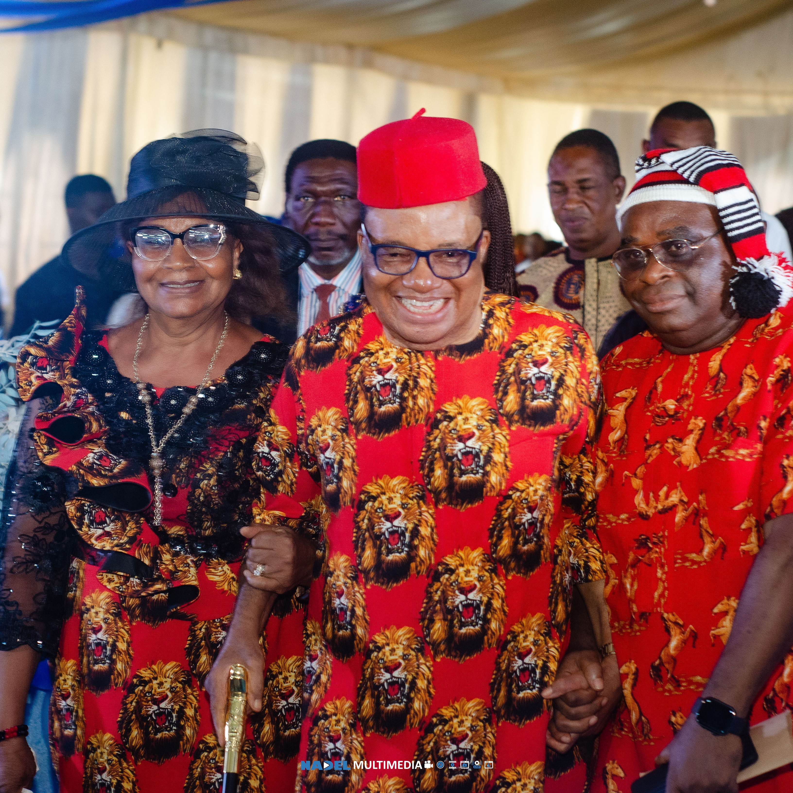

I write of my personal opinion after decades of knowing Dad.
Dad, Bishop Isiodu is a father with largeness of heart who wants everyone to succeed in their
own field.
He is a preacher of righteousness that ultimately longs for the end time Revival.






There's this aura of Peace around him that makes every challenge look mild. He's all out to encourage you
on
seeking God more and longs to see his children walk in God's way.
Dad is a rare gem, yes many may have walked with God for several decades but Dad stands out with a good
report
both of those within and outside. Not a lover of money, or title neither obsessed with recognition, His
humility
and simplicity is magnetic.
Dad is my greatest miracle meeting and connecting with him.
His impact and influence on my life, family and Ministry cannot be quantified.
Dad I love you with all my heart, I honour you, I celebrate you.
Pastor Oguchi Michael
GodsClass
With deliberate solemnity and unapologetic intellectual candour, I pay tribute to an octogenarian whose
life
has
matured into precedent, whose character has become jurisprudence, and whose ministry has evolved into
spiritual
architecture — Bishop Dr. Victor Samuel Isiodu, Presiding Bishop of Balm of Gilead Ministries
Worldwide.
For over forty years, I have known him — not superficially, not intermittently, but through sustained
relational
proximity and rigorous observation.
He is the biological father of my brother and friend Mr.Obinna BROWN ISIODU and we have flowed as
small boys
in Assemblies of God and Holy Ghost college OWERRI.
From my early associations as a small boy within the fold of the Assemblies of God Uzi Family and 44
Royce
Road , I
have witnessed a life interrogated by time yet acquitted by integrity; exposed to scrutiny yet untouched
by
scandal.
Dr. Barr. Rev. Ikenna Emmanuel( PhD international Relations and Diplomacy)
Lead Pastor, Faithhouse Leadership Church
Nnanyi na Papam it is unspeakable honour to put this few thoughts on your 80th birthday.
You have remained a pillar in god's cherished plan for humanity.
You have stayed focus on the real goal of your calling.
You have birthed men of common consequence for uncommon use irrespective of their background and
denomination.
Your spiritual loins has produced spiritual giants scattered all over the global.
We remember vividly participating in your discipleship class early 90's in Wetheral which formed the
foundation
of our faith.
Thanks so much for making yourself available. It is on record that almost every ministry and minister at
least
in Imo state have had one contact or the other with you.
You have made yourself available to everyone which is the mind of Christ.
May god in his wisdom and benevolence show you mercy as you celebrate your 80th birthday and keep you
stronger
for us in Jesus mighty name amen.
Happy birthday and congratulations. 80 looks good on you.
Keep the good work.
God's blessings always.
His bondservant
Chidi Local Ordinary
Anglican Diocese of Ohaji/Egbema
In August 1996, The Lord gave this vessel release to formally resign what was considered a promising
Pastorate
in Deeper Life Bible Church in favour of Kingdom service.
The first step was to convene a meeting with Elders at the Gate of Owerri to share the reality of
availability
to serve the whole Body of Christ just as the Lord directed.
Dr Victor Isiodu was one of those Elders who we met at the Owerri Chamber of Commerce, Industry, Mines
and
Agriculture.
He was one of those who prayed for the Kingdom vision, opening the doors of the City. Something clicked
at
that
meeting: love at first sight!
Over the 30 years since then, Dr Victor Isiodu has been consistent in a number of ways which mark him
out as
a
pacesetter in his generation and for generations to come: